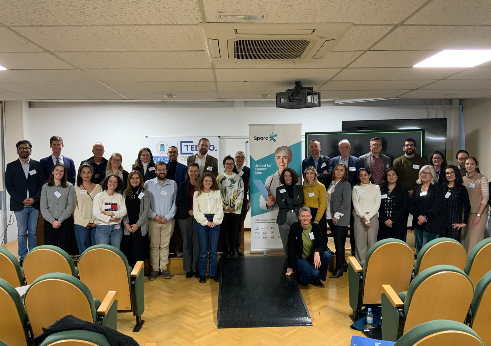
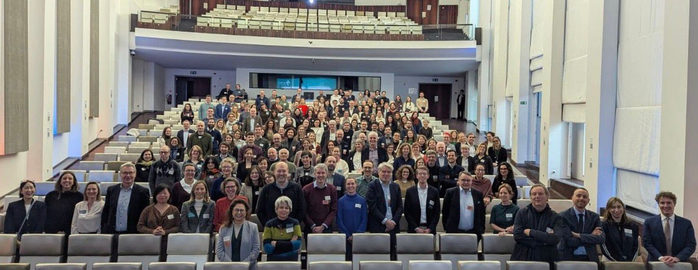

Building a Coordinated European Framework for Personalised Cancer Medicine
SPARC (Support of Personalised Medicine Approaches in Cancer) is implemented in formal synergy with the Joint Action on Personalised Cancer Medicine (JA PCM), both funded under the EU4Health Programme.
The European Commission mandated this collaboration to ensure coherence, avoid duplication, and maximise the impact of EU investments in personalised cancer medicine (PCM). While the two initiatives differ in size and scope, they share a common ambition: accelerating the equitable and sustainable integration of personalised approaches into cancer care across Europe.
JA PCM provides broad Member State coverage and a strong policy coordination mandate, addressing the full cancer care pathway from prevention to follow-up. SPARC complements this framework through:
The structured collaboration between the two initiatives is formalised in a joint public deliverable submitted to the European Commission, which defines governance, operational alignment, and shared priorities.
The SPARC–JA PCM synergy is not an abstract coordination exercise: it is a structured framework built around three complementary pillars.
At the heart of the collaboration lies a shared commitment to ensuring that personalised cancer medicine is shaped by lived experience.
SPARC establishes a Patient and Caregiver Advisory Group (PCAG), creating a structured mechanism for patient consultation across cancer types. Through the synergy, JA PCM can submit questions and requests to these consultations, and patient feedback is reintegrated into clinical discussions, working groups, and policy reflections.
Beyond consultation, joint activities address health literacy, communication, trust, and inequity mapping across Member States, ensuring that technical innovation remains aligned with patient needs and societal expectations.
To operationalise the collaboration, three thematic Working Groups were established, bringing together experts from both consortia:
These Working Groups ensure complementarity, minimise overlap, and translate pilot experiences into European-level learning and guidance.
The synergy also establishes a coordinated three-level stakeholder engagement model:
This architecture connects technical implementation, stakeholder validation, and EU policy alignment within a coherent and continuous feedback loop.
The SPARC–JA PCM synergy was formally launched through reciprocal participation at both initiatives’ Kick-Off Meetings, ensuring alignment at both governance and operational levels.
At the SPARC Kick-Off Meeting in Madrid – [20-21/11/2025], representatives from JA PCM presented the Joint Action structure and discussed operational alignment, including working groups, governance mechanisms, and long-term policy objectives.
At the JA PCM Kick-Off Meeting in Brussels – [14-14/01/2026], SPARC formally presented the project’s objectives, structure, and pilot activities, highlighting its role in supporting the implementation of personalised cancer medicine across Member States. In addition, SPARC introduced the structured three-pillar synergy framework, outlining how patient integration, joint Working Groups, and stakeholder engagement would be coordinated in practice.
Beyond presentations, the SPARC team conducted 40 structured stakeholder interviews with Member State representatives, clinicians, policymakers, and experts participating in JA PCM. These interviews explored implementation challenges, expectations, and opportunities for alignment in personalised cancer medicine
The interviews are available on the SPARC YouTube channel and contribute to the ongoing stakeholder insight collection supporting the SPARC–JA PCM collaboration.
These mutual presentations marked the formal launch of the SPARC–JA PCM synergy, ensuring political endorsement, transparency, and shared ownership from the outset.
Regular coordination meetings between the two coordination teams will continue to monitor progress, align timelines, and refine joint activities throughout the project lifecycle. The collaboration continues through coordinated visibility and shared presence at relevant European events.
By combining SPARC’s agility, pilot innovation, and strong patient engagement with JA PCM’s broad Member State coverage and policy mandate, the synergy creates a complementary European framework.
Together, the two initiatives:
The SPARC–JA PCM collaboration demonstrates how coordinated EU action can accelerate the sustainable uptake of personalised cancer medicine — translating innovation into equitable impact for patients across Europe.